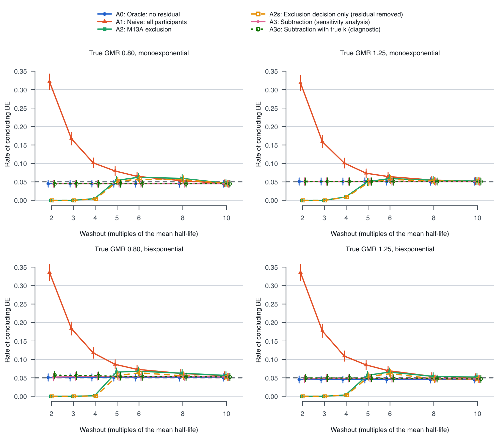
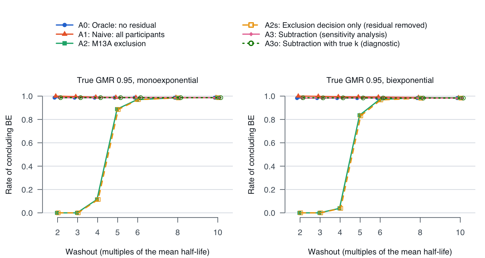
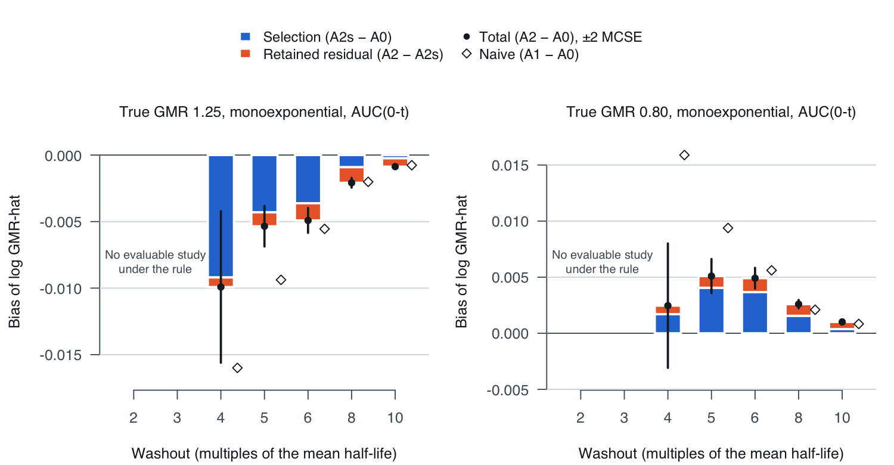

PK and clinical pharmacology
Residual carryover and the ICH M13A 5% pre-dose rule
When the washout of a crossover is set from the average half-life, participants who clear the drug slowly carry part of their period-1 dose into period 2. This study measures what the ICH M13A pre-dose rule costs and buys when washout is borderline: how often a product that is not equivalent passes, how often an equivalent product fails, and how many participants the rule drops. An FDA presentation (Zhang 2026) describes a study that failed this way; the study here puts numbers on that failure mode.
Tools built: runs. Exploratory operating-characteristics study on synthetic data. The carryover algebra and the 5% predose rule are established (Grizzle 1965; Senn, D'Angelo and Potvin 2004; Ocaña, Sánchez and Carrasco 2015; ICH M13A). The subtraction analysis is a sensitivity analysis only. Not regulatory guidance and not a validated method.
Question
In a single-dose 2x2 crossover, ICH M13A excludes a period whose pre-dose concentration is above 5% of that period's Cmax. A 2x2 analysis needs both periods, so the participant leaves the analysis. M13A also asks for at least 12 evaluable participants and does not ask for a test of carryover.
Two questions follow, for washouts between 2 and 10 mean half-lives:
- What are the consumer risk, the power, the share of participants excluded and the share of studies left with too few participants, under the rule and under two alternatives (including everyone, and subtracting the extrapolated residual)?
- How much of the bias that remains after the rule comes from residual drug left in the retained participants, and how much from the selection the rule itself makes? The rule compares the pre-dose level with that period's own Cmax, and the residual tracks period-1 exposure, so when the products differ the rule excludes more participants from one sequence than the other.
Model
The study is reported in the ADEMP structure (aims, data-generating mechanisms, estimand, methods, performance measures; Morris, White and Crowther 2019). All data are simulated.
- Design. n = 24 participants, 12 per sequence (TR and RT), single dose per period. Formulation factor φR = 1 and φT = θ, the true geometric mean ratio (GMR).
- Own-dose profile (one compartment, first-order absorption, linear PK): cip(t) = φ Fi wip (D/V) ka,i / (ka,i − ki) (e−kit − e−ka,it), with D/V = 2.
- Variability. Mean half-life 24 h: ki = (ln 2 / 24) exp(N(0, 0.302)); ka,i = 1.2 exp(N(0, 0.202)) per h; Fi = exp(N(0, 0.202)); within-participant wip = exp(N(0, 0.152)) per period.
- Carryover by superposition. Period 1 is yi1(t) = ci1(t); period 2 is yi2(t) = ci2(t) + ci1(t + W) for washout W.
- Misspecified disposition ("biexponential"): a slow phase 0.03 φ Fi wip e−(ki/4)t(1 − e−ka,it) is added to both periods and to the residual, so a monoexponential subtraction no longer matches the residual.
- Sampling and assay. 0, 0.5, 1, 1.5, 2, 3, 4, 6, 8, 12, 16, 24, 36, 48 and 72 h. Sensitivity configurations: sampling extended to 96 and 120 h; and 8% proportional assay error with an LLOQ of 0.5% of the median Cmax (BLQ treated as 0, M13A).
- Endpoints (NCA). AUC(0-t) by the linear trapezoid from t = 0 (the pre-dose sample is kept) to the last quantifiable sample; Cmax; and AUC(0-inf), from λz fitted to the last 3 positive points, used only for the M13A coverage condition AUC(0-t) / AUC(0-inf) ≥ 0.80.
- Estimand. log θ, the log GMR of test to reference. Consumer risk is the rate of concluding BE at θ = 0.80 or 1.25; power is that rate at θ = 0.95 or 1.00.
- Performance measures, each with its Monte Carlo standard error (MCSE): mean bias of log GMR-hat; rate of concluding BE; coverage of the 90% CI; share of participants excluded (overall and by sequence); share of studies not evaluable; share of profiles below 80% AUC coverage; and share of studies over the 20% trigger.
With a constant residual fraction r = AUC[ci1(· + W)] / AUC[ci1] and no within-participant noise, the naive estimate has a closed form (the algebra of Ocaña, Sánchez and Carrasco 2015 and earlier carryover work):
E[log GMR-hat] = log θ + ½[log(1 + r/θ) − log(1 + rθ)]
≈ log θ − (r/2)(θ − 1/θ)
At θ = 1.25 the bias is about −0.225 r, and at θ = 0.80 about +0.225 r: in both cases toward 1, which is toward equivalence at the boundary that defines consumer risk. Cmax has no closed form and is reported from the simulation.
Replicates and random numbers. The replicate count is sized from a target MCSE of 0.005 for a rate of 0.05: 0.05 × 0.95 / 0.0052 = 1,900, rounded up to 2,000. The generator is L'Ecuyer-CMRG with seed 20261025 and one stream per (θ, disposition) cell. Within a cell every washout, arm and configuration reuses the same simulated participants (common random numbers), so differences between arms are paired within study. Committed run: 2000 replicates per cell (MCSE 0.0049 at a rate of 0.05 and at most 0.0112, at a rate of 0.5), 8 cells, seed 20261025, R version 4.6.0 (2026-04-24); the grid took 9.7 s on 4 cores (2026-10-25).
Analyses compared
Every arm uses the same estimator: with di = log Y(period 1) − log Y(period 2), log GMR-hat = (mean dTR − mean dRT) / 2, SE = ½ sp √(1/nTR + 1/nRT) with sp the pooled within-sequence SD of d and n − 2 degrees of freedom, and the 90% CI from the t distribution. This equals the participant + period + formulation model fitted by least squares (check T3). BE is concluded if and only if the 90% CI lies within 0.80 to 1.25 on unrounded limits. A study with fewer than 12 evaluable participants or an empty sequence is not evaluable and does not conclude BE.
The six analysis arms.
| Arm | Period-2 data | Participants analyzed | Role |
|---|---|---|---|
| A0: Oracle | No residual | All | The target the other arms are measured against |
| A1: Naive | With residual | All | Include everyone, ignore carryover |
| A2: M13A exclusion | With residual | Excludes a participant whose period-2 pre-dose concentration exceeds 5% of that period's own Cmax | The rule as written |
| A2s: Exclusion decision only | Residual removed | A2's exclusion decision | Isolates the selection the rule makes |
| A3: Subtraction (sensitivity analysis) | y-hat(t) = max(0, y(t) − y(0) e−λzt), λz from that participant's period-1 terminal phase (last 3 points) | All | Predict-then-subtract |
| A3o: Subtraction with true k | As A3, with the true ki | All | Diagnostic only: an oracle slope flatters subtraction |
The rule's leftover bias splits exactly, study by study: A2 − A0 = (A2 − A2s), the residual left in the retained participants, + (A2s − A0), the selection.
Known-answer checks
The test script checks the model, the NCA and the estimator against answers known in advance, runs negative controls, checks the 5% rule on hand-built profiles, recomputes every arm from its definition and checks the MCSE formulas, before any operating characteristic is read. KA1 to KA4 and NC1 and NC2 are the known answers and controls of the study plan.
Known-answer checks and controls, written by tests/test_carryover.R (21 PASS, 0 FAIL, 2 INFO). INFO rows compare against the unvalidated pilot and are reported, not enforced.
| Test | Check | Criterion | Observed | Result |
|---|---|---|---|---|
| T1 | superposition (mono) | period-2 profile minus own-dose profile equals c_i1(t + W), and the period-2 profile equals state propagation of the gut and central amounts, within 1e-12 | max abs difference 4.44e-16 (analytic), 8.88e-16 (state propagation) | PASS |
| T1 | superposition (biexp) | period-2 profile minus own-dose profile equals c_i1(t + W) within 1e-12 (state propagation: not applicable, biexponential) | max abs difference 4.44e-16 (analytic); state propagation not applicable (biexponential) | PASS |
| T2 | NCA by hand | AUC(0-t) 47, Cmax 10 at 2 h, lambda_z ln 2/2, AUC(0-inf) 47 + 4/ln 2; inner BLQ as 0 (AUC 6.5); within 1e-12 | max abs difference 7.11e-15 | PASS |
| T2 | PKNCA 0.12.1 cross-check | AUC(0-t), Cmax and lambda_z (last 3 positive points) agree with PKNCA (linear, BLQ kept as 0) within 1e-8 relative on 24 profiles with assay error | max relative difference 3.11e-15 | PASS |
| T3 | 2x2 estimator equals lm() | estimate and 90% CI limits equal the participant + period + formulation OLS fit within 1e-10 (50 complete, 50 unbalanced datasets) | max abs difference 1.44e-15 over 100 datasets | PASS |
| T4 | KA3 closed form, constant r (sd_ka = 0) | with sigma_k = sigma_w = 0 and no assay error, the naive log GMR-hat of every study equals the closed form within 1e-10 | max abs difference 2.78e-16 over 300 studies; first-order approximation within 0.012 of the exact form | PASS |
| T4 | KA3 closed form, participant-specific r (sd_ka = 0.20) | with sigma_k = sigma_w = 0 and no assay error, the naive log GMR-hat of every study equals the closed form within 1e-10 | max abs difference 2.22e-16 over 300 studies | PASS |
| T5 | KA2 symmetry (mono) | at theta = 1, bias of A1, A2 and A2s within 3 MCSE of 0 at every washout (AUC and Cmax); 500 replicates | max |bias|/MCSE 0.76 over 34 checks; not estimable (no evaluable study): A2 at W = 2, A2s at W = 2, A2 at W = 3, A2s at W = 3 | PASS |
| T5 | KA2 symmetry (biexp) | at theta = 1, bias of A1, A2 and A2s within 3 MCSE of 0 at every washout (AUC and Cmax); 500 replicates | max |bias|/MCSE 1.78 over 34 checks; not estimable (no evaluable study): A2 at W = 2, A2s at W = 2, A2 at W = 3, A2s at W = 3 | PASS |
| T6 | KA1 adequate washout | W = 10 x the largest individual t1/2: every arm within 3 MCSE of A0 (bias and BE rate, AUC and Cmax); A0 consumer risk within 0.05 +/- 0.015; zero exclusions | max |arm - A0|/MCSE 0.01; A0 consumer risk 0.056 (MCSE 0.010); exclusions 0 | PASS |
| T7 | NC1 oracle invariance | A0 gives identical estimates at every washout, zero exclusions when the rule is applied to A0 data, and nominal consumer risk (0.05 +/- 0.015) | identical across 8 washouts: TRUE; exclusions 0; consumer risk 0.056 | PASS |
| T7 | NC2 subtraction on oracle data | A3 applied to A0 data (no residual) leaves every concentration and estimate unchanged within 1e-12 (base and assay-error configurations) | max abs difference 0 | PASS |
| T8 | M13A floor | 11 evaluable participants: not evaluable and not BE; 12 and 13: evaluable; 12 in one sequence and 0 in the other: not evaluable | 11: FALSE; 12: TRUE; 13: TRUE; empty sequence: FALSE | PASS |
| T8 | M13A 5% threshold | pre-dose at 4.9%, exactly 5.0% and 5.1% of Cmax: only 5.1% excluded; through analyze_washout() on 24 hand-built profiles (4.9% or 5.1% of the period's own Cmax, period-1 Cmax 2 or 0.5 times the period-2 Cmax): exactly the 5.1% participants excluded | boundary decisions FALSE, FALSE, TRUE; hand-built: 24 of 24 decisions as expected (12 excluded, 6 TR and 6 RT; own-period ratios 0.0490 and 0.0510; against the period-1 Cmax they would be 0.0245 to 0.1020) | PASS |
| T9 | KA4 cross-implementation | A0, A2s, A1 and A2 bias and consumer risk, and the share of participants the rule keeps in evaluable studies (theta 1.25, 5 mean t1/2), within 3 combined MCSE of judge A's Python check | max |R - Python| / combined MCSE 1.38 over 10 comparisons; R bias A2s -0.0048, A2 -0.0058, A1 -0.0098; consumer risk A2 0.052, A1 0.073, A0 0.051; kept 0.6686 (MCSE 0.0020) (Python: -0.0054, -0.0060, -0.0108; 0.062, 0.083, 0.056; kept 0.6655 and 0.6656) | PASS |
| INFO | misspecification, W = 2 t1/2 | biexponential disposition: subtraction's consumer risk exceeds A0's at short washouts (the pilot, which subtracted with the true k as A3o does, reported 0.069 at 3 mean t1/2) | A3o (true k, as the pilot) 0.0495, paired difference from A0 +0.0040 (MCSE 0.0014); A3 (lambda_z from period 1) 0.0470, paired difference +0.0015 (MCSE 0.0009); A0 0.0455 | INFO |
| INFO | misspecification, W = 3 t1/2 | biexponential disposition: subtraction's consumer risk exceeds A0's at short washouts (the pilot, which subtracted with the true k as A3o does, reported 0.069 at 3 mean t1/2) | A3o (true k, as the pilot) 0.0495, paired difference from A0 +0.0040 (MCSE 0.0014); A3 (lambda_z from period 1) 0.0490, paired difference +0.0035 (MCSE 0.0013); A0 0.0455 | INFO |
| T10 | G1 invariance (washout_h unset) | simulate_study(sample_design("BE", N = 40), seed = 2026) regenerates the 8 committed CSVs byte for byte; washout_h = NULL is identical; identical to the generator before washout_h existed | 8 of 8 files byte-identical; explicit NULL identical: TRUE; full-precision match with 515b092: TRUE | PASS |
| T10 | washout_h = 48 demonstration | no new random draws (the other six domains, and period-1 ADPC after the pre-dose sample, identical to the default); a pre-dose sample below the LLOQ is reported as <LLOQ and counts as 0 (period-1 ADPP identical to the default; PDCMXR 0); quantified period-2 pre-dose values at or above the LLOQ; PDCMXR rows, ANL02FL null and PKEXRSN set for excluded participants; G3 structural checks pass | other domains identical: 6 of 6; period 1 after pre-dose identical: TRUE; period-1 NCA identical: TRUE; period-1 pre-dose <LLOQ: 40 of 40; period-2 pre-dose quantified (at or above the LLOQ of 0.50): 27 of 40, <LLOQ: 13; excluded: 11 of 40; flags consistent: TRUE; G3: PASS | PASS |
| T11 | arms recomputed from their definitions | for every washout: the exclusion decision equals pre-dose > 0.05 x the period-2 profile's own maximum; A0, A1, A2, A2s, A3 and A3o estimates, CI limits and BE decisions (AUC(0-t) and Cmax) equal be_2x2() on the endpoints each arm is defined to use, within 1e-12; A2 and A2s differ in every study evaluable under the rule (the residual is positive) | exclusions identical: TRUE; max abs difference 0; BE decisions identical: TRUE; smallest |A2 - A2s| in an evaluable study 5.73e-09 (8 washouts) | PASS |
| T11 | subtraction against the oracle | monoexponential disposition, no assay error: A3 estimate and CI limits within 1e-8 of A0 (lambda_z from period 1) and A3o within 1e-10 (true k), every washout, AUC(0-t) and Cmax, with the same BE decision in every study | max abs difference A3 - A0 4.82e-12, A3o - A0 4.3e-15; BE decisions that differ: 0 | PASS |
| T11 | exclusions by sequence | exclusion shares by sequence equal a recount with the sequence read from the period-1 product, within 1e-12 (every washout at a true GMR of 1.25, and 5 half-lives at 0.80); at 5 half-lives the sequence whose period-2 product gives lower exposure loses more participants: TR at a true GMR of 1.25 and RT at 0.80, each by more than 3 MCSE | max abs difference 0; TR - RT at 1.25: +0.178 (MCSE 0.008); RT - TR at 0.80: +0.162 (MCSE 0.008) | PASS |
| T12 | MCSE formulas and replicate sizing | rate and mean MCSEs equal hand-computed values within 1e-7; reps_for_mcse(0.05, 0.005) = 2,000 (MCSE 0.0049); share MCSE 0 for an exact multiple and within 10% of a bootstrap | max abs difference 7.76e-09; replicates 2000; share 0.7944 with MCSE 0.0394 against bootstrap SD 0.0410; exact multiple: share 0.8000, MCSE 0 | PASS |
Results
Base configuration (no assay error, sampling to 72 h), AUC(0-t), monoexponential disposition unless stated. Every configuration, disposition and endpoint is in out/oc_results.csv.
- Naive analysis. At a true GMR of 1.25 the consumer risk of including everyone is 0.318 (MCSE 0.010) at 2 mean half-lives, 0.159 (0.008) at 3, 0.073 (0.006) at 5 and 0.052 (0.005) at 10, against 0.051 (0.005) with no residual. The bias is toward 1, as the closed form predicts.
- Interval coverage. With no residual the 90% CI covers the true GMR in 0.900 (MCSE 0.007) of studies. Including everyone, coverage falls to 0.678 (0.010) at 2 mean half-lives and 0.832 (0.008) at 3; under the M13A rule it is 0.878 (0.019) at 4 half-lives and 0.903 (0.007) at 5.
- M13A rule, short washouts. At 2 and 3 mean half-lives the rule excludes 100% and 90% of participants and no study is evaluable, so consumer risk is 0 and so is power. At 4 half-lives 87% of studies are not evaluable and power at a true GMR of 0.95 is 0.115 (MCSE 0.007), against 0.987 (0.003) with no residual.
- M13A rule, borderline washouts. At 5 mean half-lives the rule drops 34% of participants (43% in sequence TR, 25% in RT at a true GMR of 1.25) and brings consumer risk to 0.051 (MCSE 0.005); power at 0.95 falls to 0.888 (0.007). At 6 half-lives it drops 16% and consumer risk is 0.059 (0.005), close to the naive 0.065 (0.005).
- Where the rule's bias comes from. At a true GMR of 1.25 the M13A arm's bias is -0.0054 (MCSE 0.0008) at 5 half-lives; selection contributes -0.0043 (0.0008) and retained residual -0.0010 (0.0001). Selection is 80% (MCSE 3%) of the total at 5 half-lives and 74% (3%) at 6; at 8 it is 44% (5%), where the two parts are comparable, and at 10 it is 28% (6%), where the retained residual is the larger part (delta-method MCSEs).
- Subtraction (sensitivity analysis). With a monoexponential residual and no assay error, subtracting the extrapolated pre-dose concentration matches the oracle almost exactly, because the model it extrapolates is the model that generated the data: over the base grid the largest per-study difference in log GMR-hat from the oracle is 2.1e-09 (λz is fitted to period-1 points that still carry a trace of absorption; 1.7e-11 with the true k), and every study reaches the oracle's BE decision. Under the biexponential disposition its consumer risk at 3 half-lives is 0.049 (MCSE 0.005) against 0.045 (0.005) with no residual; with 8% assay error and an LLOQ it is 0.045 (0.005) against 0.048 (0.005).
- Sampling. With sampling to 72 h and a mean half-life of 24 h, 20% of profiles have AUC(0-t) below 80% of AUC(0-inf), and 56% of studies cross the M13A 20% trigger even with no residual. Sampling to 120 h brings these to 0.6% and 0.0%.
- Endpoints. Without assay error, Cmax and the joint decision (AUC(0-t) and Cmax both within the limits) give the same picture as AUC(0-t): their BE rates differ from it by at most 0.0015 and 0.0015 in the base configuration with the monoexponential disposition, and by at most 0.015 anywhere without assay error, because within-participant variation then largely scales each profile as a whole. With 8% assay error each sample has its own error and the endpoints separate: the joint rate is up to 0.076 lower than the AUC(0-t) rate (A1 arm, 2 mean half-lives, true GMR 1.25, biexponential disposition).
Consumer risk

T2. Rate of concluding BE on AUC(0-t), true GMR 1.25 (consumer risk). Studies that are not evaluable count as not concluding BE. Columns: washout as a multiple of the mean half-life (24 h); KA1 = 10 times the largest individual half-life in each replicate. Cells: estimate (MCSE). n/e: no evaluable study.
| Arm | 2× | 3× | 4× | 5× | 6× | 8× | 10× | KA1 |
|---|---|---|---|---|---|---|---|---|
| A0: Oracle: no residual | 0.051 (0.005) | 0.051 (0.005) | 0.051 (0.005) | 0.051 (0.005) | 0.051 (0.005) | 0.051 (0.005) | 0.051 (0.005) | 0.051 (0.005) |
| A1: Naive: all participants | 0.318 (0.010) | 0.159 (0.008) | 0.101 (0.007) | 0.073 (0.006) | 0.065 (0.005) | 0.055 (0.005) | 0.052 (0.005) | 0.051 (0.005) |
| A2: M13A exclusion | 0.000 (0.000) | 0.000 (0.000) | 0.009 (0.002) | 0.051 (0.005) | 0.059 (0.005) | 0.054 (0.005) | 0.052 (0.005) | 0.051 (0.005) |
| A2s: Exclusion decision only (residual removed) | 0.000 (0.000) | 0.000 (0.000) | 0.009 (0.002) | 0.049 (0.005) | 0.057 (0.005) | 0.052 (0.005) | 0.051 (0.005) | 0.051 (0.005) |
| A3: Subtraction (sensitivity analysis) | 0.051 (0.005) | 0.051 (0.005) | 0.051 (0.005) | 0.051 (0.005) | 0.051 (0.005) | 0.051 (0.005) | 0.051 (0.005) | 0.051 (0.005) |
| A3o: Subtraction with true k (diagnostic) | 0.051 (0.005) | 0.051 (0.005) | 0.051 (0.005) | 0.051 (0.005) | 0.051 (0.005) | 0.051 (0.005) | 0.051 (0.005) | 0.051 (0.005) |
T2. Rate of concluding BE on AUC(0-t), true GMR 0.80 (consumer risk). Studies that are not evaluable count as not concluding BE. Columns: washout as a multiple of the mean half-life (24 h); KA1 = 10 times the largest individual half-life in each replicate. Cells: estimate (MCSE). n/e: no evaluable study.
| Arm | 2× | 3× | 4× | 5× | 6× | 8× | 10× | KA1 |
|---|---|---|---|---|---|---|---|---|
| A0: Oracle: no residual | 0.045 (0.005) | 0.045 (0.005) | 0.045 (0.005) | 0.045 (0.005) | 0.045 (0.005) | 0.045 (0.005) | 0.045 (0.005) | 0.045 (0.005) |
| A1: Naive: all participants | 0.322 (0.010) | 0.167 (0.008) | 0.102 (0.007) | 0.080 (0.006) | 0.065 (0.006) | 0.053 (0.005) | 0.046 (0.005) | 0.045 (0.005) |
| A2: M13A exclusion | 0.000 (0.000) | 0.000 (0.000) | 0.004 (0.001) | 0.054 (0.005) | 0.062 (0.005) | 0.059 (0.005) | 0.046 (0.005) | 0.045 (0.005) |
| A2s: Exclusion decision only (residual removed) | 0.000 (0.000) | 0.000 (0.000) | 0.004 (0.001) | 0.052 (0.005) | 0.057 (0.005) | 0.056 (0.005) | 0.045 (0.005) | 0.045 (0.005) |
| A3: Subtraction (sensitivity analysis) | 0.045 (0.005) | 0.045 (0.005) | 0.045 (0.005) | 0.045 (0.005) | 0.045 (0.005) | 0.045 (0.005) | 0.045 (0.005) | 0.045 (0.005) |
| A3o: Subtraction with true k (diagnostic) | 0.045 (0.005) | 0.045 (0.005) | 0.045 (0.005) | 0.045 (0.005) | 0.045 (0.005) | 0.045 (0.005) | 0.045 (0.005) | 0.045 (0.005) |
Power

T2. Rate of concluding BE on AUC(0-t), true GMR 0.95 (power). Studies that are not evaluable count as not concluding BE. Columns: washout as a multiple of the mean half-life (24 h); KA1 = 10 times the largest individual half-life in each replicate. Cells: estimate (MCSE). n/e: no evaluable study.
| Arm | 2× | 3× | 4× | 5× | 6× | 8× | 10× | KA1 |
|---|---|---|---|---|---|---|---|---|
| A0: Oracle: no residual | 0.987 (0.003) | 0.987 (0.003) | 0.987 (0.003) | 0.987 (0.003) | 0.987 (0.003) | 0.987 (0.003) | 0.987 (0.003) | 0.987 (0.003) |
| A1: Naive: all participants | 1.000 (0.000) | 0.996 (0.001) | 0.991 (0.002) | 0.989 (0.002) | 0.988 (0.002) | 0.988 (0.002) | 0.987 (0.003) | 0.987 (0.003) |
| A2: M13A exclusion | 0.000 (0.000) | 0.000 (0.000) | 0.115 (0.007) | 0.888 (0.007) | 0.970 (0.004) | 0.986 (0.003) | 0.987 (0.003) | 0.987 (0.003) |
| A2s: Exclusion decision only (residual removed) | 0.000 (0.000) | 0.000 (0.000) | 0.115 (0.007) | 0.885 (0.007) | 0.970 (0.004) | 0.985 (0.003) | 0.987 (0.003) | 0.987 (0.003) |
| A3: Subtraction (sensitivity analysis) | 0.987 (0.003) | 0.987 (0.003) | 0.987 (0.003) | 0.987 (0.003) | 0.987 (0.003) | 0.987 (0.003) | 0.987 (0.003) | 0.987 (0.003) |
| A3o: Subtraction with true k (diagnostic) | 0.987 (0.003) | 0.987 (0.003) | 0.987 (0.003) | 0.987 (0.003) | 0.987 (0.003) | 0.987 (0.003) | 0.987 (0.003) | 0.987 (0.003) |
T2. Rate of concluding BE on AUC(0-t), true GMR 1.00 (power). Studies that are not evaluable count as not concluding BE. Columns: washout as a multiple of the mean half-life (24 h); KA1 = 10 times the largest individual half-life in each replicate. Cells: estimate (MCSE). n/e: no evaluable study.
| Arm | 2× | 3× | 4× | 5× | 6× | 8× | 10× | KA1 |
|---|---|---|---|---|---|---|---|---|
| A0: Oracle: no residual | 1.000 (0.000) | 1.000 (0.000) | 1.000 (0.000) | 1.000 (0.000) | 1.000 (0.000) | 1.000 (0.000) | 1.000 (0.000) | 1.000 (0.000) |
| A1: Naive: all participants | 1.000 (0.000) | 1.000 (0.000) | 1.000 (0.000) | 1.000 (0.000) | 1.000 (0.000) | 1.000 (0.000) | 1.000 (0.000) | 1.000 (0.000) |
| A2: M13A exclusion | 0.000 (0.000) | 0.000 (0.000) | 0.134 (0.008) | 0.944 (0.005) | 0.998 (0.001) | 1.000 (0.000) | 1.000 (0.000) | 1.000 (0.000) |
| A2s: Exclusion decision only (residual removed) | 0.000 (0.000) | 0.000 (0.000) | 0.134 (0.008) | 0.943 (0.005) | 0.998 (0.001) | 0.999 (0.001) | 1.000 (0.000) | 1.000 (0.000) |
| A3: Subtraction (sensitivity analysis) | 1.000 (0.000) | 1.000 (0.000) | 1.000 (0.000) | 1.000 (0.000) | 1.000 (0.000) | 1.000 (0.000) | 1.000 (0.000) | 1.000 (0.000) |
| A3o: Subtraction with true k (diagnostic) | 1.000 (0.000) | 1.000 (0.000) | 1.000 (0.000) | 1.000 (0.000) | 1.000 (0.000) | 1.000 (0.000) | 1.000 (0.000) | 1.000 (0.000) |
Bias and interval coverage
T1a. Bias of log GMR-hat, AUC(0-t), true GMR 1.25. Columns: washout as a multiple of the mean half-life (24 h); KA1 = 10 times the largest individual half-life in each replicate. Cells: estimate (MCSE). n/e: no evaluable study.
| Arm | 2× | 3× | 4× | 5× | 6× | 8× | 10× | KA1 |
|---|---|---|---|---|---|---|---|---|
| A0: Oracle: no residual | -0.0005 (0.0010) | -0.0005 (0.0010) | -0.0005 (0.0010) | -0.0005 (0.0010) | -0.0005 (0.0010) | -0.0005 (0.0010) | -0.0005 (0.0010) | -0.0005 (0.0010) |
| A1: Naive: all participants | -0.0467 (0.0008) | -0.0278 (0.0009) | -0.0165 (0.0009) | -0.0098 (0.0009) | -0.0060 (0.0009) | -0.0025 (0.0010) | -0.0012 (0.0010) | -0.0005 (0.0010) |
| A2: M13A exclusion | n/e | n/e | -0.0085 (0.0038) | -0.0058 (0.0012) | -0.0054 (0.0010) | -0.0026 (0.0010) | -0.0013 (0.0010) | -0.0005 (0.0010) |
| A2s: Exclusion decision only (residual removed) | n/e | n/e | -0.0078 (0.0039) | -0.0048 (0.0012) | -0.0041 (0.0011) | -0.0014 (0.0010) | -0.0007 (0.0010) | -0.0005 (0.0010) |
| A3: Subtraction (sensitivity analysis) | -0.0005 (0.0010) | -0.0005 (0.0010) | -0.0005 (0.0010) | -0.0005 (0.0010) | -0.0005 (0.0010) | -0.0005 (0.0010) | -0.0005 (0.0010) | -0.0005 (0.0010) |
| A3o: Subtraction with true k (diagnostic) | -0.0005 (0.0010) | -0.0005 (0.0010) | -0.0005 (0.0010) | -0.0005 (0.0010) | -0.0005 (0.0010) | -0.0005 (0.0010) | -0.0005 (0.0010) | -0.0005 (0.0010) |
| Closed form, naive (no within-participant noise) | -0.0459 | -0.0270 | -0.0158 | -0.0092 | -0.0055 | -0.0020 | -0.0008 | -0.0000 |
T1b. Bias of log GMR-hat, AUC(0-t), true GMR 0.80. Columns: washout as a multiple of the mean half-life (24 h); KA1 = 10 times the largest individual half-life in each replicate. Cells: estimate (MCSE). n/e: no evaluable study.
| Arm | 2× | 3× | 4× | 5× | 6× | 8× | 10× | KA1 |
|---|---|---|---|---|---|---|---|---|
| A0: Oracle: no residual | 0.0010 (0.0009) | 0.0010 (0.0009) | 0.0010 (0.0009) | 0.0010 (0.0009) | 0.0010 (0.0009) | 0.0010 (0.0009) | 0.0010 (0.0009) | 0.0010 (0.0009) |
| A1: Naive: all participants | 0.0468 (0.0008) | 0.0281 (0.0009) | 0.0169 (0.0009) | 0.0104 (0.0009) | 0.0066 (0.0009) | 0.0031 (0.0009) | 0.0019 (0.0009) | 0.0011 (0.0009) |
| A2: M13A exclusion | n/e | n/e | -0.0015 (0.0037) | 0.0060 (0.0012) | 0.0059 (0.0010) | 0.0036 (0.0010) | 0.0020 (0.0009) | 0.0011 (0.0009) |
| A2s: Exclusion decision only (residual removed) | n/e | n/e | -0.0023 (0.0037) | 0.0049 (0.0012) | 0.0047 (0.0011) | 0.0026 (0.0010) | 0.0014 (0.0010) | 0.0010 (0.0009) |
| A3: Subtraction (sensitivity analysis) | 0.0010 (0.0009) | 0.0010 (0.0009) | 0.0010 (0.0009) | 0.0010 (0.0009) | 0.0010 (0.0009) | 0.0010 (0.0009) | 0.0010 (0.0009) | 0.0010 (0.0009) |
| A3o: Subtraction with true k (diagnostic) | 0.0010 (0.0009) | 0.0010 (0.0009) | 0.0010 (0.0009) | 0.0010 (0.0009) | 0.0010 (0.0009) | 0.0010 (0.0009) | 0.0010 (0.0009) | 0.0010 (0.0009) |
| Closed form, naive (no within-participant noise) | 0.0457 | 0.0269 | 0.0157 | 0.0093 | 0.0055 | 0.0021 | 0.0008 | 0.0000 |
T1c. Coverage of the 90% CI for the log GMR, AUC(0-t), true GMR 1.25 (studies evaluable in that arm). Columns: washout as a multiple of the mean half-life (24 h); KA1 = 10 times the largest individual half-life in each replicate. Cells: estimate (MCSE). n/e: no evaluable study.
| Arm | 2× | 3× | 4× | 5× | 6× | 8× | 10× | KA1 |
|---|---|---|---|---|---|---|---|---|
| A0: Oracle: no residual | 0.900 (0.007) | 0.900 (0.007) | 0.900 (0.007) | 0.900 (0.007) | 0.900 (0.007) | 0.900 (0.007) | 0.900 (0.007) | 0.900 (0.007) |
| A1: Naive: all participants | 0.678 (0.010) | 0.832 (0.008) | 0.879 (0.007) | 0.895 (0.007) | 0.901 (0.007) | 0.900 (0.007) | 0.900 (0.007) | 0.900 (0.007) |
| A2: M13A exclusion | n/e | n/e | 0.878 (0.019) | 0.903 (0.007) | 0.899 (0.007) | 0.901 (0.007) | 0.900 (0.007) | 0.900 (0.007) |
| A2s: Exclusion decision only (residual removed) | n/e | n/e | 0.871 (0.020) | 0.905 (0.007) | 0.901 (0.007) | 0.900 (0.007) | 0.899 (0.007) | 0.900 (0.007) |
| A3: Subtraction (sensitivity analysis) | 0.900 (0.007) | 0.900 (0.007) | 0.900 (0.007) | 0.900 (0.007) | 0.900 (0.007) | 0.900 (0.007) | 0.900 (0.007) | 0.900 (0.007) |
| A3o: Subtraction with true k (diagnostic) | 0.900 (0.007) | 0.900 (0.007) | 0.900 (0.007) | 0.900 (0.007) | 0.900 (0.007) | 0.900 (0.007) | 0.900 (0.007) | 0.900 (0.007) |
Exclusions and studies that are not evaluable
T3. M13A pre-dose rule: share of participants excluded (overall and by sequence) and share of studies not evaluable (fewer than 12 participants or an empty sequence). Columns: washout as a multiple of the mean half-life (24 h); KA1 = 10 times the largest individual half-life in each replicate. Cells: estimate (MCSE). n/e: no evaluable study.
| Quantity | 2× | 3× | 4× | 5× | 6× | 8× | 10× | KA1 |
|---|---|---|---|---|---|---|---|---|
| GMR 1.25: participants excluded | 0.995 (0.000) | 0.895 (0.001) | 0.624 (0.002) | 0.338 (0.002) | 0.158 (0.002) | 0.026 (0.001) | 0.004 (0.000) | 0.000 (0.000) |
| GMR 1.25: excluded, sequence TR | 0.999 (0.000) | 0.940 (0.002) | 0.717 (0.003) | 0.428 (0.003) | 0.217 (0.003) | 0.039 (0.001) | 0.006 (0.000) | 0.000 (0.000) |
| GMR 1.25: excluded, sequence RT | 0.992 (0.001) | 0.851 (0.002) | 0.531 (0.003) | 0.248 (0.003) | 0.100 (0.002) | 0.013 (0.001) | 0.002 (0.000) | 0.000 (0.000) |
| GMR 1.25: studies not evaluable | 1.000 (0.000) | 1.000 (0.000) | 0.853 (0.008) | 0.029 (0.004) | 0.000 (0.000) | 0.000 (0.000) | 0.000 (0.000) | 0.000 (0.000) |
| GMR 1.00: participants excluded | 0.997 (0.000) | 0.902 (0.001) | 0.629 (0.002) | 0.338 (0.002) | 0.152 (0.002) | 0.023 (0.001) | 0.003 (0.000) | 0.000 (0.000) |
| GMR 1.00: excluded, sequence TR | 0.997 (0.000) | 0.904 (0.002) | 0.630 (0.003) | 0.340 (0.003) | 0.154 (0.002) | 0.024 (0.001) | 0.003 (0.000) | 0.000 (0.000) |
| GMR 1.00: excluded, sequence RT | 0.996 (0.000) | 0.901 (0.002) | 0.628 (0.003) | 0.337 (0.003) | 0.151 (0.002) | 0.023 (0.001) | 0.003 (0.000) | 0.000 (0.000) |
| GMR 1.00: studies not evaluable | 1.000 (0.000) | 1.000 (0.000) | 0.859 (0.008) | 0.032 (0.004) | 0.000 (0.000) | 0.000 (0.000) | 0.000 (0.000) | 0.000 (0.000) |
| GMR 0.80: participants excluded | 0.995 (0.000) | 0.895 (0.001) | 0.623 (0.002) | 0.339 (0.002) | 0.157 (0.002) | 0.028 (0.001) | 0.004 (0.000) | 0.000 (0.000) |
| GMR 0.80: excluded, sequence TR | 0.992 (0.001) | 0.851 (0.002) | 0.532 (0.003) | 0.253 (0.003) | 0.101 (0.002) | 0.012 (0.001) | 0.001 (0.000) | 0.000 (0.000) |
| GMR 0.80: excluded, sequence RT | 0.998 (0.000) | 0.938 (0.002) | 0.714 (0.003) | 0.425 (0.003) | 0.213 (0.003) | 0.044 (0.001) | 0.007 (0.001) | 0.000 (0.000) |
| GMR 0.80: studies not evaluable | 1.000 (0.000) | 1.000 (0.000) | 0.855 (0.008) | 0.032 (0.004) | 0.000 (0.000) | 0.000 (0.000) | 0.000 (0.000) | 0.000 (0.000) |
The AUC coverage condition
T4. M13A coverage condition AUC(0-t) / AUC(0-inf) ≥ 0.80 at a true GMR of 1.25: mean share of analyzed profiles below 0.80, and share of studies in which more than 20% of profiles fall below it (M13A then asks for a discussion of validity). Columns: washout as a multiple of the mean half-life (24 h); KA1 = 10 times the largest individual half-life in each replicate. Cells: estimate (MCSE). n/e: no evaluable study.
| Sampling; arm; quantity | 2× | 3× | 4× | 5× | 6× | 8× | 10× | KA1 |
|---|---|---|---|---|---|---|---|---|
| Sampling to 72 h; A0: Oracle: no residual, profiles below 80% | 0.205 (0.002) | 0.205 (0.002) | 0.205 (0.002) | 0.205 (0.002) | 0.205 (0.002) | 0.205 (0.002) | 0.205 (0.002) | 0.205 (0.002) |
| Sampling to 72 h; A0: Oracle: no residual, studies over the 20% trigger | 0.558 (0.011) | 0.558 (0.011) | 0.558 (0.011) | 0.558 (0.011) | 0.558 (0.011) | 0.558 (0.011) | 0.558 (0.011) | 0.558 (0.011) |
| Sampling to 72 h; A1: Naive: all participants, profiles below 80% | 0.203 (0.002) | 0.204 (0.002) | 0.204 (0.002) | 0.205 (0.002) | 0.205 (0.002) | 0.205 (0.002) | 0.205 (0.002) | 0.205 (0.002) |
| Sampling to 72 h; A1: Naive: all participants, studies over the 20% trigger | 0.548 (0.011) | 0.552 (0.011) | 0.554 (0.011) | 0.556 (0.011) | 0.556 (0.011) | 0.557 (0.011) | 0.557 (0.011) | 0.558 (0.011) |
| Sampling to 72 h; A2: M13A exclusion, profiles below 80% | 0.000 (0.000) | 0.000 (0.000) | 0.000 (0.000) | 0.010 (0.001) | 0.074 (0.001) | 0.183 (0.002) | 0.202 (0.002) | 0.205 (0.002) |
| Sampling to 72 h; A2: M13A exclusion, studies over the 20% trigger | 0.000 (0.000) | 0.000 (0.000) | 0.000 (0.000) | 0.000 (0.000) | 0.026 (0.004) | 0.427 (0.011) | 0.534 (0.011) | 0.558 (0.011) |
| Sampling to 120 h; A0: Oracle: no residual, profiles below 80% | 0.006 (0.000) | 0.006 (0.000) | 0.006 (0.000) | 0.006 (0.000) | 0.006 (0.000) | 0.006 (0.000) | 0.006 (0.000) | 0.006 (0.000) |
| Sampling to 120 h; A0: Oracle: no residual, studies over the 20% trigger | 0.000 (0.000) | 0.000 (0.000) | 0.000 (0.000) | 0.000 (0.000) | 0.000 (0.000) | 0.000 (0.000) | 0.000 (0.000) | 0.000 (0.000) |
| Sampling to 120 h; A1: Naive: all participants, profiles below 80% | 0.006 (0.000) | 0.006 (0.000) | 0.006 (0.000) | 0.006 (0.000) | 0.006 (0.000) | 0.006 (0.000) | 0.006 (0.000) | 0.006 (0.000) |
| Sampling to 120 h; A1: Naive: all participants, studies over the 20% trigger | 0.000 (0.000) | 0.000 (0.000) | 0.000 (0.000) | 0.000 (0.000) | 0.000 (0.000) | 0.000 (0.000) | 0.000 (0.000) | 0.000 (0.000) |
| Sampling to 120 h; A2: M13A exclusion, profiles below 80% | 0.000 (0.000) | 0.000 (0.000) | 0.000 (0.000) | 0.000 (0.000) | 0.000 (0.000) | 0.000 (0.000) | 0.003 (0.000) | 0.006 (0.000) |
| Sampling to 120 h; A2: M13A exclusion, studies over the 20% trigger | 0.000 (0.000) | 0.000 (0.000) | 0.000 (0.000) | 0.000 (0.000) | 0.000 (0.000) | 0.000 (0.000) | 0.000 (0.000) | 0.000 (0.000) |
Selection versus retained residual

T5. The M13A arm's bias split into retained residual (A2 - A2s) and selection (A2s - A0), and the rule against including everyone (A2 - A1), paired within study, AUC(0-t). Bias terms use studies evaluable under the rule; BE-rate terms use all studies. Cells: estimate (MCSE). Selection share: (A2s - A0) / (A2 - A0), with its delta-method MCSE; left blank when the total is within 2 MCSE of 0.
| Washout | Evaluable studies | Total, A2 − A0 | Retained residual, A2 − A2s | Selection, A2s − A0 | Selection share | BE rate, A2 − A0 | BE rate, selection | Bias, A2 − A1 | BE rate, A2 − A1 |
|---|---|---|---|---|---|---|---|---|---|
| GMR 1.25, 2× | 0 | n/e | n/e | n/e | -0.051 (0.005) | -0.051 (0.005) | n/e | -0.318 (0.010) | |
| GMR 1.25, 3× | 0 | n/e | n/e | n/e | -0.051 (0.005) | -0.051 (0.005) | n/e | -0.159 (0.008) | |
| GMR 1.25, 4× | 294 | -0.0099 (0.0028) | -0.0007 (0.0002) | -0.0092 (0.0029) | 93% (3%) | -0.042 (0.005) | -0.042 (0.005) | 0.0054 (0.0028) | -0.092 (0.007) |
| GMR 1.25, 5× | 1942 | -0.0054 (0.0008) | -0.0010 (0.0001) | -0.0043 (0.0008) | 80% (3%) | -0.001 (0.005) | -0.002 (0.005) | 0.0039 (0.0007) | -0.023 (0.005) |
| GMR 1.25, 6× | 2000 | -0.0049 (0.0005) | -0.0013 (0.0001) | -0.0036 (0.0005) | 74% (3%) | 0.008 (0.004) | 0.005 (0.004) | 0.0006 (0.0004) | -0.005 (0.004) |
| GMR 1.25, 8× | 2000 | -0.0021 (0.0002) | -0.0012 (0.0000) | -0.0009 (0.0002) | 44% (5%) | 0.004 (0.002) | 0.002 (0.002) | -7.2e-05 (1.6e-04) | -0.001 (0.002) |
| GMR 1.25, 10× | 2000 | -0.0009 (0.0001) | -0.0006 (0.0000) | -0.0002 (0.0001) | 28% (6%) | 0.001 (0.001) | 0.001 (0.001) | -0.0001 (0.0001) | 0.000 (0.001) |
| GMR 1.25, KA1 | 2000 | -2.5e-05 (1.2e-06) | -2.5e-05 (1.2e-06) | 0.0000 (0.0000) | 0% (0%) | 0.000 (0.000) | 0.000 (0.000) | 0.0000 (0.0000) | 0.000 (0.000) |
| GMR 0.80, 2× | 0 | n/e | n/e | n/e | -0.045 (0.005) | -0.045 (0.005) | n/e | -0.322 (0.010) | |
| GMR 0.80, 3× | 0 | n/e | n/e | n/e | -0.045 (0.005) | -0.045 (0.005) | n/e | -0.167 (0.008) | |
| GMR 0.80, 4× | 290 | 0.0025 (0.0028) | 0.0008 (0.0002) | 0.0017 (0.0028) | -0.041 (0.005) | -0.041 (0.005) | -0.0121 (0.0027) | -0.097 (0.007) | |
| GMR 0.80, 5× | 1937 | 0.0051 (0.0008) | 0.0010 (0.0001) | 0.0041 (0.0008) | 80% (3%) | 0.009 (0.006) | 0.007 (0.005) | -0.0042 (0.0007) | -0.025 (0.006) |
| GMR 0.80, 6× | 2000 | 0.0049 (0.0005) | 0.0012 (0.0001) | 0.0037 (0.0005) | 75% (3%) | 0.018 (0.005) | 0.012 (0.005) | -0.0007 (0.0004) | -0.003 (0.005) |
| GMR 0.80, 8× | 2000 | 0.0026 (0.0002) | 0.0010 (0.0000) | 0.0016 (0.0002) | 60% (3%) | 0.015 (0.003) | 0.011 (0.003) | 0.0005 (0.0002) | 0.006 (0.003) |
| GMR 0.80, 10× | 2000 | 0.0010 (0.0001) | 0.0006 (0.0000) | 0.0004 (0.0001) | 37% (5%) | 0.002 (0.002) | 0.001 (0.001) | 0.0002 (0.0001) | 0.001 (0.001) |
| GMR 0.80, KA1 | 2000 | 2.5e-05 (1.2e-06) | 2.5e-05 (1.2e-06) | 0.0000 (0.0000) | 0% (0%) | 0.000 (0.000) | 0.000 (0.000) | 0.0000 (0.0000) | 0.000 (0.000) |
Sensitivity: biexponential disposition, assay error and extended sampling
T2c. Consumer risk on AUC(0-t) at a true GMR of 1.25 under the biexponential disposition, 8% assay error with an LLOQ of 0.5% of the median Cmax, and sampling extended to 120 h. Columns: washout as a multiple of the mean half-life (24 h); KA1 = 10 times the largest individual half-life in each replicate. Cells: estimate (MCSE). n/e: no evaluable study.
| Configuration; arm | 2× | 3× | 4× | 5× | 6× | 8× | 10× | KA1 |
|---|---|---|---|---|---|---|---|---|
| Base, biexponential; A0: Oracle: no residual | 0.045 (0.005) | 0.045 (0.005) | 0.045 (0.005) | 0.045 (0.005) | 0.045 (0.005) | 0.045 (0.005) | 0.045 (0.005) | 0.045 (0.005) |
| Base, biexponential; A1: Naive: all participants | 0.336 (0.011) | 0.177 (0.009) | 0.109 (0.007) | 0.085 (0.006) | 0.070 (0.006) | 0.054 (0.005) | 0.051 (0.005) | 0.048 (0.005) |
| Base, biexponential; A2: M13A exclusion | 0.000 (0.000) | 0.000 (0.000) | 0.004 (0.001) | 0.057 (0.005) | 0.066 (0.006) | 0.054 (0.005) | 0.052 (0.005) | 0.048 (0.005) |
| Base, biexponential; A3: Subtraction (sensitivity analysis) | 0.047 (0.005) | 0.049 (0.005) | 0.049 (0.005) | 0.049 (0.005) | 0.048 (0.005) | 0.048 (0.005) | 0.047 (0.005) | 0.047 (0.005) |
| Assay error, monoexponential; A0: Oracle: no residual | 0.048 (0.005) | 0.048 (0.005) | 0.048 (0.005) | 0.048 (0.005) | 0.048 (0.005) | 0.048 (0.005) | 0.048 (0.005) | 0.048 (0.005) |
| Assay error, monoexponential; A1: Naive: all participants | 0.312 (0.010) | 0.160 (0.008) | 0.104 (0.007) | 0.073 (0.006) | 0.062 (0.005) | 0.051 (0.005) | 0.050 (0.005) | 0.048 (0.005) |
| Assay error, monoexponential; A2: M13A exclusion | 0.000 (0.000) | 0.000 (0.000) | 0.015 (0.003) | 0.059 (0.005) | 0.060 (0.005) | 0.056 (0.005) | 0.051 (0.005) | 0.048 (0.005) |
| Assay error, monoexponential; A3: Subtraction (sensitivity analysis) | 0.044 (0.005) | 0.045 (0.005) | 0.047 (0.005) | 0.046 (0.005) | 0.048 (0.005) | 0.048 (0.005) | 0.048 (0.005) | 0.048 (0.005) |
| Assay error, biexponential; A0: Oracle: no residual | 0.045 (0.005) | 0.045 (0.005) | 0.045 (0.005) | 0.045 (0.005) | 0.045 (0.005) | 0.045 (0.005) | 0.045 (0.005) | 0.045 (0.005) |
| Assay error, biexponential; A1: Naive: all participants | 0.340 (0.011) | 0.172 (0.008) | 0.111 (0.007) | 0.081 (0.006) | 0.067 (0.006) | 0.050 (0.005) | 0.048 (0.005) | 0.045 (0.005) |
| Assay error, biexponential; A2: M13A exclusion | 0.000 (0.000) | 0.000 (0.000) | 0.007 (0.002) | 0.068 (0.006) | 0.067 (0.006) | 0.053 (0.005) | 0.050 (0.005) | 0.045 (0.005) |
| Assay error, biexponential; A3: Subtraction (sensitivity analysis) | 0.048 (0.005) | 0.049 (0.005) | 0.048 (0.005) | 0.046 (0.005) | 0.045 (0.005) | 0.045 (0.005) | 0.045 (0.005) | 0.045 (0.005) |
| Sampling to 120 h, monoexponential; A0: Oracle: no residual | 0.051 (0.005) | 0.051 (0.005) | 0.051 (0.005) | 0.051 (0.005) | 0.051 (0.005) | 0.051 (0.005) | 0.051 (0.005) | 0.051 (0.005) |
| Sampling to 120 h, monoexponential; A1: Naive: all participants | 0.319 (0.010) | 0.159 (0.008) | 0.101 (0.007) | 0.073 (0.006) | 0.065 (0.005) | 0.056 (0.005) | 0.052 (0.005) | 0.051 (0.005) |
| Sampling to 120 h, monoexponential; A2: M13A exclusion | 0.000 (0.000) | 0.000 (0.000) | 0.009 (0.002) | 0.051 (0.005) | 0.059 (0.005) | 0.054 (0.005) | 0.052 (0.005) | 0.051 (0.005) |
| Sampling to 120 h, monoexponential; A3: Subtraction (sensitivity analysis) | 0.051 (0.005) | 0.051 (0.005) | 0.051 (0.005) | 0.051 (0.005) | 0.051 (0.005) | 0.051 (0.005) | 0.051 (0.005) | 0.051 (0.005) |
| Sampling to 120 h, biexponential; A0: Oracle: no residual | 0.045 (0.005) | 0.045 (0.005) | 0.045 (0.005) | 0.045 (0.005) | 0.045 (0.005) | 0.045 (0.005) | 0.045 (0.005) | 0.045 (0.005) |
| Sampling to 120 h, biexponential; A1: Naive: all participants | 0.340 (0.011) | 0.180 (0.009) | 0.112 (0.007) | 0.086 (0.006) | 0.070 (0.006) | 0.055 (0.005) | 0.051 (0.005) | 0.048 (0.005) |
| Sampling to 120 h, biexponential; A2: M13A exclusion | 0.000 (0.000) | 0.000 (0.000) | 0.004 (0.001) | 0.060 (0.005) | 0.067 (0.006) | 0.055 (0.005) | 0.053 (0.005) | 0.048 (0.005) |
| Sampling to 120 h, biexponential; A3: Subtraction (sensitivity analysis) | 0.043 (0.005) | 0.047 (0.005) | 0.049 (0.005) | 0.049 (0.005) | 0.049 (0.005) | 0.049 (0.005) | 0.048 (0.005) | 0.047 (0.005) |
Single-study ADaM demonstration
The same rule applied to one study from the repository's PK sandbox, generated with the new washout_h option of simulate_adam.R (the sandbox's own PK model, median half-life about 8 h, washout 48 h). ADPC period-2 pre-dose rows then carry the period-1 residual: quantified when it is at or above the LLOQ, and reported as <LLOQ (counted as 0, M13A) when it is below. ADPP gains PDCMXR (pre-dose concentration / Cmax of the same period), ANL02FL (bioequivalence analysis flag, "Y" or null) and PKEXRSN (the reason, as in the repository's flagship study).
With washout_h = 48, 11 of 40 participants have a period-2 pre-dose concentration above 5% of that period's Cmax (largest ratio 0.107). Their ADPP rows carry a null ANL02FL in both periods, and the period-2 rows give the reason in PKEXRSN; 29 participants remain for the bioequivalence analysis.
Participants excluded from the bioequivalence analysis in the ADaM demonstration (out/adam_demo/adpp.csv; PDCMXR = pre-dose concentration / Cmax, period 2).
| USUBJID | Sequence | Period-2 treatment | PDCMXR | ANL02FL | PKEXRSN |
|---|---|---|---|---|---|
| CP-SIM-102-026 | RT | Test | 0.107 | (null) | PRE-DOSE CONCENTRATION ABOVE 5% OF CMAX |
| CP-SIM-102-023 | TR | Reference | 0.089 | (null) | PRE-DOSE CONCENTRATION ABOVE 5% OF CMAX |
| CP-SIM-102-025 | TR | Reference | 0.075 | (null) | PRE-DOSE CONCENTRATION ABOVE 5% OF CMAX |
| CP-SIM-102-009 | TR | Reference | 0.066 | (null) | PRE-DOSE CONCENTRATION ABOVE 5% OF CMAX |
| CP-SIM-102-012 | RT | Test | 0.063 | (null) | PRE-DOSE CONCENTRATION ABOVE 5% OF CMAX |
| CP-SIM-102-036 | RT | Test | 0.057 | (null) | PRE-DOSE CONCENTRATION ABOVE 5% OF CMAX |
| CP-SIM-102-019 | TR | Reference | 0.056 | (null) | PRE-DOSE CONCENTRATION ABOVE 5% OF CMAX |
| CP-SIM-102-003 | TR | Reference | 0.055 | (null) | PRE-DOSE CONCENTRATION ABOVE 5% OF CMAX |
| CP-SIM-102-022 | RT | Test | 0.054 | (null) | PRE-DOSE CONCENTRATION ABOVE 5% OF CMAX |
| CP-SIM-102-029 | TR | Reference | 0.054 | (null) | PRE-DOSE CONCENTRATION ABOVE 5% OF CMAX |
| CP-SIM-102-018 | RT | Test | 0.052 | (null) | PRE-DOSE CONCENTRATION ABOVE 5% OF CMAX |
Variable names: the ADaMIG for Non-compartmental Analysis Input Data (ADNCA) v1.0 defines NCAXFL, NCAwXRS and PKSUMXF to flag concentration records left out of the NCA or of PK summaries (as listed in the Pinnacle 21 and Certara webinar "What is ADNCA", September 2024; the CDISC document itself was not re-read for this page). This rule removes a participant from the bioequivalence model, not from the NCA, so the demonstration uses an ADPP analysis flag and the reason variable of the repository's flagship study instead. Record-level ADaM flags take "Y" or null. With washout_h unset the generator's output is byte-identical to the committed sandbox files (check T10).
What this shows and does not show
It shows, under the stated model only:
- At short washouts the 5% rule does not let a product that is not equivalent pass; it makes the study fail by leaving too few participants, the failure mode the FDA presentation describes. Its cost then falls on power, which collapses at 4 mean half-lives and is still reduced at 5.
- At 5 mean half-lives the rule removes part of the naive bias, not all of it. Paired with including everyone in the same studies, it reduces the size of the bias by 0.0039 (MCSE 0.0007) at a true GMR of 1.25 and 0.0042 (0.0007) at 0.80, and lowers consumer risk by 0.023 (0.005) and 0.025 (0.006); its consumer risk is 0.051 (MCSE 0.005) and 0.054 (0.005), against 0.051 and 0.045 for the oracle.
- At 6 half-lives the rule drops 16% of participants with no detectable gain over including everyone: the paired changes in the size of the bias are -0.0006 (0.0004) and -0.0007 (0.0004), and in consumer risk -0.005 (0.004) and -0.003 (0.005) (true GMR 1.25 and 0.80). Paired with the oracle in the same studies, its consumer risk is higher by 0.008 (MCSE 0.004) and 0.018 (0.005).
- At 8 and 10 half-lives, where the rule drops 3% and 0.4% of participants, its selection makes its bias slightly larger than the naive analysis's at a true GMR of 0.80: by 0.0005 (MCSE 0.0002) and 0.0002 (0.0001), with consumer risk 0.0595 (MCSE 0.0053) against the naive 0.0535 (0.0050) at 8 half-lives, a paired difference of +0.006 (0.003). At 1.25 the same differences, +0.0001 (0.0002) and +0.0001 (0.0001), are not distinguishable from 0.
- Most of the bias left after the rule at 5 to 6 half-lives comes from the selection the rule makes, not from residual left in the retained participants: selection is 80% (MCSE 3%) and 74% (3%) of it at 5 and 6 half-lives at a true GMR of 1.25, and 80% (3%) and 75% (3%) at 0.80. The rule conditions on the outcome: its denominator is the period's own Cmax, so it excludes more participants from the sequence whose period-2 product gives lower exposure (at 5 half-lives, 43% of TR and 25% of RT at a true GMR of 1.25, and 25% and 43% at 0.80).
- The sampling schedule matters for a separate M13A condition: sampling to 72 h for a 24 h half-life leaves many profiles below 80% AUC coverage, with or without carryover.
It does not show:
- Anything about a real product. The data are synthetic, from one PK model with one set of variability values and n = 24. There is no period effect, no dropout and no sequence effect other than carryover.
- Separate behavior of Cmax without assay error: within-participant variation then largely scales each profile as a whole, which ties Cmax to AUC. Only the assay-error configuration separates the two endpoints.
- That subtraction is safe. Without assay error and with a monoexponential residual it matches the oracle almost exactly, because the model it extrapolates is the model that generated the data; its behavior under other misspecifications (nonlinear PK, induction, a different terminal phase in period 2) is not studied. It is a sensitivity analysis, and the conclusion rests on the primary analysis.
- One expected pattern from the pilot did not reproduce. The pilot subtracted with the true k, as arm A3o does here. With the biexponential phase at 3 half-lives, A3o's consumer risk is 0.0495 (MCSE 0.0049) against the oracle's 0.0455 (0.0047), a paired difference of +0.0040 (0.0014), and A3, with λz estimated from period 1, gives 0.0490 (0.0048); the pilot reported 0.069 (INFO rows in the checks).
- Regulatory guidance or a validated method. The NCA is a short base-R implementation checked against PKNCA (check T2). In a study, NCA comes from a validated system such as Phoenix WinNonlin or a qualified PKNCA setup, and M13A applies as written.
SAP language
Wording a statistical analysis plan could use for the primary analysis and the two sensitivity analyses studied here:
"In this single-dose 2x2 study, a period whose predose concentration exceeds 5% of that period's Cmax will be excluded for that participant (ICH M13A); because both periods are required, the participant will be excluded from the bioequivalence analysis, and exclusions will be reported by sequence. As sensitivity analyses, the primary analysis will be repeated including all participants and after subtracting the extrapolated residual (predose concentration times exp(-lambda_z t), lambda_z from that participant's period-1 terminal phase). The bioequivalence conclusion rests on the primary analysis."
CSR appendix shell
Shells for reporting the rule and the sensitivity analyses; xx marks a value filled from the study's ADPP.
Table 14.2.x.1. Participants excluded from the bioequivalence analysis under the pre-dose rule, by sequence (PK population)
| Category | TR (N = xx) | RT (N = xx) | Total (N = xx) |
|---|---|---|---|
| Period-2 pre-dose concentration > 5% of Cmax, n (%) | xx (xx.x) | xx (xx.x) | xx (xx.x) |
| Pre-dose / Cmax among those excluded, median (min, max) | x.xxx (x.xxx, x.xxx) | x.xxx (x.xxx, x.xxx) | x.xxx (x.xxx, x.xxx) |
| Evaluable for bioequivalence (ANL02FL = "Y"), n (%) | xx (xx.x) | xx (xx.x) | xx (xx.x) |
Table 14.2.x.2. Bioequivalence of test versus reference: primary analysis and sensitivity analyses
| Analysis | Parameter | n | GMR (%) | 90% CI (%) | Within 80.00 to 125.00% |
|---|---|---|---|---|---|
| Primary: M13A pre-dose exclusion | AUC(0-t); Cmax | xx | xx.xx | xx.xx, xx.xx | Yes / No |
| Sensitivity: all participants | AUC(0-t); Cmax | xx | xx.xx | xx.xx, xx.xx | Yes / No |
| Sensitivity: extrapolated residual subtracted | AUC(0-t); Cmax | xx | xx.xx | xx.xx, xx.xx | Yes / No |
Footnotes for the shell: model with sequence, participant within sequence, period and formulation; limits compared unrounded; the conclusion rests on the primary analysis. A by-participant listing (16.2.x) gives USUBJID, sequence, period, pre-dose concentration, Cmax, their ratio and PKEXRSN for every participant excluded.
Provenance and credit
Established prior art, credited first:
- Carryover is aliased with sequence in the 2x2 design: Grizzle 1965, Biometrics 21:467-480; Freeman 1989, Statistics in Medicine 8:1421-1432.
- Carryover in bioequivalence crossovers: Senn, D'Angelo and Potvin 2004, Pharmaceutical Statistics 3:133-142; Ocaña, Sánchez and Carrasco 2015, Pharmaceutical Statistics 14:400-408, the closest prior art for the consumer-risk algebra above.
- Two one-sided tests: Schuirmann 1987, Journal of Pharmacokinetics and Biopharmaceutics 15:657-680. The pre-dose rule, the 12-participant floor and the coverage condition: ICH M13A (Step 4 23 Jul 2024; FDA final 30 Oct 2024; EU effective 25 Jan 2025).
- Adjusting for incomplete washout with a model (predict, then subtract or integrate): Huang et al., PAGE 32 (2024), abstract 10872; a Simulations Plus abstract at PKUK; and the KEYNOTE-555 protocol (NCT03665597), which adjusts when pre-dose is at least 5% of Cmax. These three come from the study plan and were not re-read for this page.
- The failure mode itself: Zhang Z (FDA CDER, Office of Generic Drugs). Common bioequivalence study design deficiencies and how to avoid them. SBIA Generic Drug Forum, 22-23 April 2026, slide 8 (fda.gov/media/194074). It reports a crossover that failed because an inadequate washout led to many participants being excluded under the 5% of Cmax recommendation, and advises setting the washout from the variability of the half-life rather than its mean alone and pre-specifying alternatives such as subtraction. This page puts numbers on that failure mode.
- Reporting of simulation studies: Morris, White and Crowther 2019, Statistics in Medicine 38:2074-2102.
What is new here is narrow. The failure mode and the advice to pre-specify alternatives are in the FDA presentation above; what this page adds is the operating characteristics of the M13A exclusion rule itself (consumer and producer risk, exclusion and non-evaluable rates) at borderline washouts under clearance variability, and the split of the rule's leftover bias into selection and retained residual. Searches of the literature and the BEBAC forum on 2026-10-25 found discussion of the rule but no published simulation of these quantities; that is not proof that none exists. The algebra, the 5% rule and predict-then-subtract are all established.
Design. Comparing a naive, a censored and a model-adjusted analysis follows the design of my cluster randomized trial simulation study, where contamination plays the role residual drug plays here.
Iben P. Contamination-resilient cluster randomized trial design under spatial interference: a simulation study of contamination control. Statistics in Medicine, submitted. Preprint: doi:10.5281/zenodo.23486177 (latest version: doi:10.5281/zenodo.23486176). Study code and data: doi:10.17605/OSF.IO/XPA4S. That manuscript acknowledges Dr. Kathryn Colborn, who posed the original question, and the co-authors of an earlier unpublished trial-data manuscript: Banaei-Kashani, Kechris, Echodu, Eganyu, Bever and Yeka.
How it was built and checked. The study plan was prepared with AI assistance and scored by two AI-agent reviewers; one of them wrote the Python check of the selection effect that T9 compares against, and an earlier, unvalidated Python pilot supplied the expected patterns. This module was drafted with AI assistance. T9 is a second implementation of the same plan, not independent double programming by a second person. Human sign-off is not yet recorded.
Run it
Rscript sim_lifecycle/carryover_oc/R/run_oc.R # grid and ADaM demonstration (about 10 s on 4 cores)
Rscript sim_lifecycle/carryover_oc/tests/test_carryover.R # checks; writes the pass table
Rscript sim_lifecycle/carryover_oc/R/tables.R # tables, figures and this page's numbersRun from the repository root, in that order. Base R 4.6.0 only (the parallel package ships with R); OC_CORES=1 runs serially with the same results. The PKNCA cross-check in T2 runs when PKNCA is installed and is skipped otherwise.
R/dgm.Rsettings, participants, profiles, residual, assay, closed formR/nca_m13a.RNCA for many profiles at once (M13A conventions)R/analyze.R2x2 estimator, arms, MCSEs, decomposition, streamsR/run_oc.Rthe grid and the ADaM demonstrationR/tables.RT1 to T5, F1 to F3, generated page blockstests/test_carryover.RT1 to T12 known-answer checks and controlsout/oc_results.csvevery cell, washout, arm and endpoint, with MCSEsout/oc_bias_decomposition.csvselection and retained residual, paired, with MCSEsout/known_answer_checks.csvthe pass table aboveout/adam_demo/adpp.csvADPP with PDCMXR, ANL02FL and PKEXRSN
Tables T1 to T5 are also in out/tables/ as CSV; run facts are in out/run_info.csv.